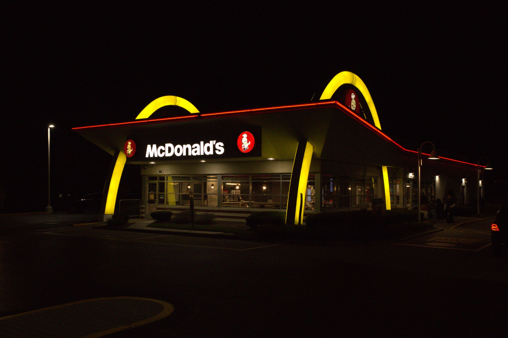
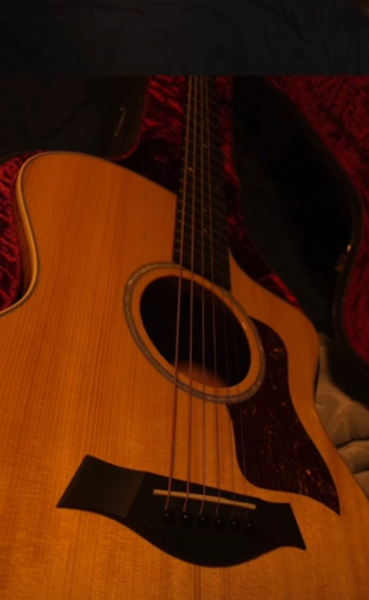

About Me
My name is Axel Salazar and I am a student at Illinois Institute of Technology. I am studying Information Technology and Management. I enjoy learning about computers, programming, technology, and how different types of technology can be used to solve problems.
Some of the areas of technology that interest me include cloud computing, programming, and data. I have worked with programming languages and tools such as Java, Python, SQL, Linux, HTML, and GitHub. I want to continue developing these skills throughout college and use them in my future career.
My Interests
Outside of school and technology, I have several hobbies. One of my interests is photography. I enjoy using cameras and learning how different camera settings can change the appearance of a photograph. Photography gives me a way to be creative while also learning about the technical side of cameras.

I also enjoy music and playing guitar. Learning guitar gives me something different to work on outside of my classes. I like learning new songs and improving my playing over time.

My Goals
One of my main goals in college is to gain more experience in information technology. I want to continue improving my programming, database, networking, and cloud computing skills. I am especially interested in gaining experience through internships and projects where I can apply what I learn in class to real situations.
After graduating, I would like to work in a technology-related position, specifically something that handles data. Cloud computing is one area that I am currently interested in exploring as a possible career path.